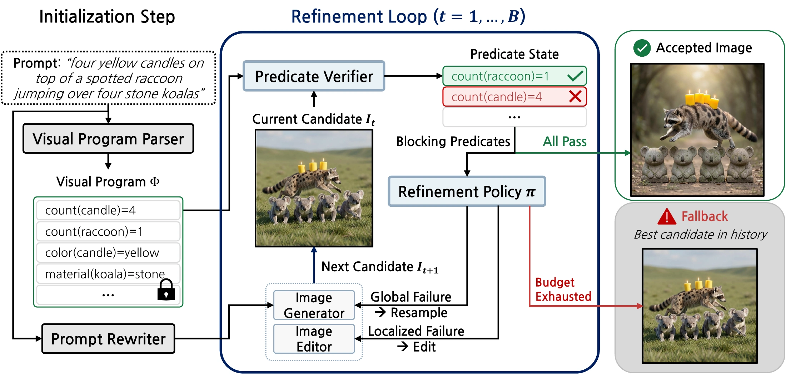

COMPOSITIONAL TEXT-TO-IMAGE GENERATION
EPICEfficient Predicate-Guided Inference-Time Control
for Compositional Text-to-Image Generation
Accepted at NeurIPS 2026
1 Graduate School of Artificial Intelligence, POSTECH
2 Department of Computer Science and Engineering, POSTECH
Parse once. Verify each candidate. Refine what fails.
Selected EPIC outputs. All images are actual results from our experiments.
THE IDEA
Keep the requirements fixed.
Let the image improve.
Compositional prompts ask an image to satisfy several requirements at once: the right objects, the right number of instances, the right attributes, and the right relationships.
EPIC makes those requirements explicit. It compiles the original prompt into a fixed visual program of typed predicates. Each candidate is checked against that same program using visual evidence. The remaining failures guide either targeted editing or resampling, turning verification into a control signal for refinement.
The framework uses pretrained components and requires no controller or generator training.
Parse
Compile the original prompt once into objects and checkable visual predicates.
Verify
Recompute predicate states from the visual evidence in every candidate.
Refine
Route local failures to editing and broader failures to fresh generation.

QUANTITATIVE RESULTS
Stronger composition.
More efficient refinement.
On GenEval2, EPIC improves alignment while using fewer image-model executions and MLLM resources than RAISE.
71.46GM
Prompt-level alignment
34.16 for single-pass generation
31%
Fewer image-model executions
13.6 vs. 19.8 per prompt, compared with RAISE
81%
Fewer MLLM tokens
9.2k vs. 49.4k per prompt, compared with RAISE
Prompt-level alignment
Soft-TIFA GM (0–100). Higher is better.
| Method | GM ↑ | AM ↑ | Image calls ↓ | MLLM calls ↓ | MLLM tokens (k) ↓ |
|---|---|---|---|---|---|
| FLUX.2-Klein-9B | 34.16 | 79.06 | 1.00 | — | — |
| BoN+NVILA | 41.60 | 82.38 | 32.0 | — | — |
| T2I-Copilot | 36.56 | 81.19 | 1.24 | 4.48 | 15.2 |
| RAISE | 52.23 | 86.28 | 19.8 | 9.12 | 49.4 |
| EPIC Ours | 71.46 | 90.25 | 13.6 | 2.53 | 9.2 |
800 prompts · Maximum budget of 32 image-model executions · Deterministic MLLM decoding (T = 0). GM and AM are Soft-TIFA scores on a 0–100 scale. Costs are realized averages per prompt; “—” denotes an unreported value.
Alignment across prompt complexityAtomicity 3–10
Atomicity is the number of primitive visual requirements in a prompt.
GenEval2 · Soft-TIFA GM (0–100), higher is better. Paper
EPIC targets explicit compositional requirements. Performance and visual-quality trade-offs vary across benchmarks; see the paper for additional evaluations and limitations.
QUALITATIVE COMPARISONS
Better compositional alignment with EPIC.
“five red monkeys, and five glass donuts to the left of a metal dog”
Selected comparisons using the same prompt and FLUX.2-Klein-9B backbone.
CITE THIS WORK
BibTeX
If you find this work useful, please consider citing our paper.
@article{mun2026epic,
title = {EPIC: Efficient Predicate-Guided Inference-Time Control
for Compositional Text-to-Image Generation},
author = {Mun, Sunung and Cho, Sunghyun and Ok, Jungseul},
journal = {arXiv preprint arXiv:2605.11722},
year = {2026},
url = {https://arxiv.org/abs/2605.11722}
}